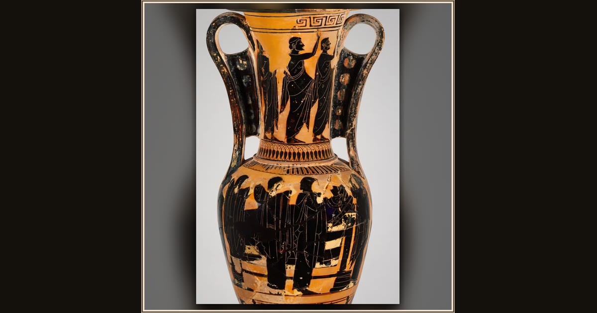

Terracotta loutrophoros (ceremonial vase for water)
Greek, Attic · last quarter of 6th century BCE · met
A ceremonial vase shows figures mourning around a body laid out for burial, matching the funeral rites Menexenus says the city is arranging for its dead (234b) Explore its place in Plato's Dialogues, Menexenus, section 2.